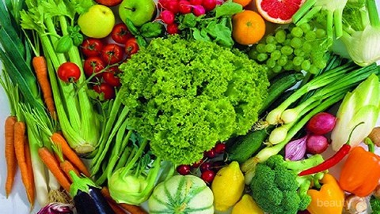

Sayuran
Menurut panduan pola makan 'Tumpeng Gizi Seimbang' yang dirancang Kementerian Kesehatan Republik Indonesia, sejatinya kita disarankan untuk mengkonsumsi tiga hingga empat porsi sayuran per hari. Kekurangan asupan sayuran bisa menyebabkan berbagai masalah kesehatan. Oleh karena itu, kamu tidak boleh mengabaikan pentingnya mengkonsumsi sayuran. Sebagai rekomendasi, berikut kumparan rangkum enam sayuran paling sehat untuk dikonsumsi. Contohnya:brokoli,bayam,wortel,tomat dll.